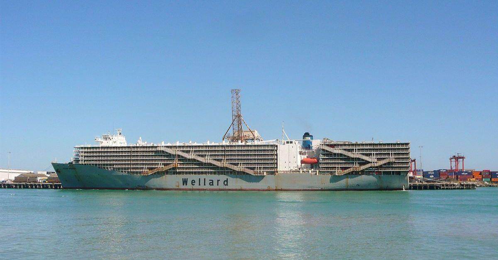
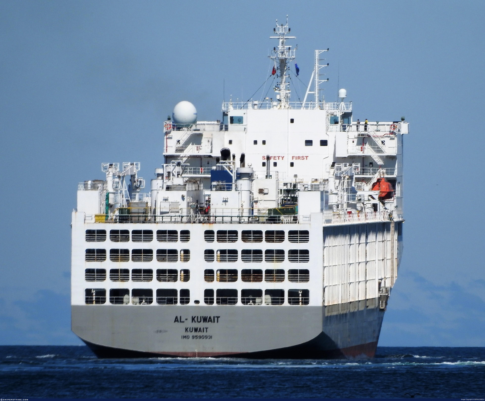

Exportación de bovinos, ovinos y caprinos vivos desde Brasil, Uruguay, Argentina, Chile, Australia y Rumania. Coordinación logística desde Miami como hub. Cortes premium de carne bovina y ovina. Certificación MAPA, ICA, OIE. Halal disponible. Export of live cattle, sheep and goats from Brazil, Uruguay, Argentina, Chile, Australia and Romania. Logistics coordination from Miami as hub. Premium beef and lamb cuts. MAPA, ICA, OIE certification. Halal available. تصدير الأبقار والأغنام والماعز الأحياء من البرازيل وأوروغواي والأرجنتين وتشيلي وأستراليا ورومانيا. قطع لحوم بقري وضأن ممتازة. شهادة MAPA وICA وOIE. Halal متاح. 从巴西、乌拉圭、阿根廷、智利、澳大利亚和罗马尼亚出口活牛、羊和山羊。迈阿密作为物流枢纽进行协调。优质牛肉和羊肉切割。MAPA、ICA、OIE认证。清真认证可选。
Animales Vivos · Exportación CertificadaLive Animals · Certified Exportالحيوانات الحية · تصدير معتمد活体动物 · 认证出口
Bovinos vivos de razas Nelore, Angus Cruzado y Brahman desde Brasil y Colombia. Peso promedio 350–500 kg. Certificación sanitaria MAPA e ICA con historial completo de vacunación y origen. Aptos para engorde, reproducción y faena con Halal. Live cattle of Nelore, Angus Cross and Brahman breeds from Brazil and Colombia. Average weight 350–500 kg. MAPA and ICA sanitary certification with full vaccination history and origin. Suitable for fattening, breeding and Halal slaughter. أبقار حية من سلالات نيلور وأنجوس وبراهمان من البرازيل وكولومبيا. وزن متوسط 350-500 كجم. شهادة صحية MAPA وICA. مناسبة للتسمين والتربية والذبح الحلال. 来自巴西和哥伦比亚的尼罗尔、安格斯杂交和婆罗门品种活牛。平均重量350-500公斤。MAPA和ICA卫生认证。适合育肥、繁育和清真屠宰。
Ovinos vivos de razas Dorper, Ile de France y Santa Inês desde Brasil. Alta demanda en Medio Oriente y Caribe. Peso 35–65 kg. Vacunación completa MAPA. Certificados OIE. Operaciones directas GLV en fincas ganaderas del sur de Brasil. Live sheep of Dorper, Ile de France and Santa Inês breeds from Brazil. High demand in Middle East and Caribbean. Weight 35–65 kg. Full MAPA vaccination. OIE certificates. Direct GLV operations on livestock farms in southern Brazil. أغنام حية من سلالات دوربر وإيل دو فرانس وسانتا إينيس من البرازيل. طلب مرتفع في الشرق الأوسط. وزن 35-65 كجم. شهادات OIE. 来自巴西的多尔珀、法国岛和圣伊内斯品种活羊。中东和加勒比需求旺盛。重量35-65公斤。OIE证书。
Caprinos vivos de razas Anglo Nubiana y Boer desde Colombia y Brasil. Ideal para mercado étnico USA, Caribe, Medio Oriente y África. Peso 25–50 kg. Certificación ICA Colombia y MAPA Brasil. Halal certificado disponible. Live goats of Anglo Nubian and Boer breeds from Colombia and Brazil. Ideal for ethnic market USA, Caribbean, Middle East and Africa. Weight 25–50 kg. ICA Colombia and MAPA Brazil certification. Halal certified available. ماعز حية من سلالات أنجلو نوبيان وبوير من كولومبيا والبرازيل. مثالية للسوق الإثنية والشرق الأوسط. وزن 25-50 كجم. شهادة ICA وMAPA. 来自哥伦比亚和巴西的盎格鲁努比亚和波尔品种活山羊。适合族裔市场、美国、加勒比、中东和非洲。重量25-50公斤。
Razas CertificadasCertified Breedsالسلالات المعتمدة认证品种
Raza Zebu de alta rusticidad y adaptabilidad tropical. Carne magra, alta tolerancia al calor. 80% del rebaño ganadero brasileño.Zebu breed of high rusticity and tropical adaptability. Lean meat, high heat tolerance. 80% of Brazil's livestock herd.
Cruce Angus × Nelore. Carne con mayor marmoleado. Ideal para mercados premium y cortes especiales de exportación.Angus × Nelore cross. Higher marbled meat. Ideal for premium markets and special export cuts.
Raza ovino de doble propósito, carne y piel. Alta prolificidad. Preferida en Medio Oriente por su sabor intenso y conformación corporal.Dual-purpose sheep breed, meat and skin. High prolificacy. Preferred in the Middle East for its intense flavor and body conformation.
Ovino carnicero de origen francés. Musculatura superior, poca grasa. Muy apreciado en mercados gourmet y restauración de alta gama.French-origin meat sheep. Superior musculature, little fat. Highly appreciated in gourmet markets and high-end restaurants.
Cortes Premium · ExportaciónPremium Cuts · Exportقطع ممتازة · تصدير优质切割 · 出口
Lomo ancho con hueso. Alta marmorización. Ref. IMPS 112A. Congelado o fresco.Bone-in ribeye. High marbling. Ref. IMPS 112A. Frozen or fresh.
USDA Ref.Lomo fino sin hueso. Corte NY Strip. Congelado IQF. Halal disponible.Boneless fine loin. NY Strip cut. IQF frozen. Halal available.
NY StripSolomillo. El corte más tierno. Empaque individual. MOQ 500 kg.Tenderloin. The most tender cut. Individual packaging. MOQ 500 kg.
PremiumPaleta bovina. Ideal para guisos, mercado masivo. Precio competitivo.Chuck roast. Ideal for stews, mass market. Competitive price.
Mass MarketCostillar de cordero Halal. 8 costillas. Premium gastronómico.Halal lamb rack. 8 ribs. Gastronomic premium.
HalalPierna entera o deshuesada. Congelado. MOQ 1 MT. Medio Oriente.Whole or boneless leg. Frozen. MOQ 1 MT. Middle East.
HalalPaleta de cordero entera. Cocción lenta. Mercado árabe y mediterráneo.Whole lamb shoulder. Slow cooking. Arab and Mediterranean market.
Arab MarketFlank, skirt, brisket, short rib. Por pedido. MOQ flexible.Flank, skirt, brisket, short rib. By order. Flexible MOQ.
Custom
Logística Viva · Buques GanaderosLive Logistics · Livestock Vesselsاللوجستيات الحية · سفن الماشية活体物流 · 牲畜运输船
El transporte de animales vivos exige logística de precisión. GLV Global Food Services coordina el embarque en buques ganaderos certificados con sistemas de ventilación, alimentación automatizada y veterinarios a bordo. Orígenes: Brasil, Uruguay, Argentina, Chile, Australia y Rumania. Destinos: UAE, Kuwait, Jordania, Caribe y África. Transporting live animals requires precision logistics. GLV Global Food Services coordinates shipment on certified livestock vessels with ventilation systems, automated feeding and onboard veterinarians. Origins: Brazil, Uruguay, Argentina, Chile, Australia and Romania. Destinations: UAE, Kuwait, Jordan, Caribbean and Africa. نقل الحيوانات الحية يتطلب لوجستيات دقيقة. تنسق GLV الشحن على سفن ماشية معتمدة. المسارات الرئيسية: ميامي → الإمارات، الكويت، الأردن، الكاريبي. 活体动物运输需要精准物流。GLV协调在认证牲畜船上装运，配备通风系统、自动喂料和船上兽医。主要航线：迈阿密→阿联酋、科威特、约旦、加勒比。
Buques Ganaderos ReferenciaReference Livestock Vesselsسفن الماشية المرجعية参考牲畜运输船
Mercados DestinoDestination Marketsالأسواق المستهدفة目标市场
Proceso OperativoOperational Processالعملية التشغيلية运营流程
Selección en fincas Colombia y Brasil. Visita personal GLV. Registro sanitario individual.Selection on farms Colombia and Brazil. GLV personal visit. Individual health registry.
Exámenes veterinarios completos. Certificados MAPA / ICA. Cuarentena pre-embarque.Complete veterinary exams. MAPA / ICA certificates. Pre-shipment quarantine.
Carga en buque ganadero certificado. Supervisión veterinaria. Capacidad según especie.Loading on certified livestock vessel. Veterinary supervision. Capacity according to species.
Tránsito PortMIA si aplica. Inspección USDA/FDA. Documentación completa.PortMIA transit if applicable. USDA/FDA inspection. Complete documentation.
Desembarque supervisado. Certificados Halal si aplica. Soporte post-entrega.Supervised disembarkation. Halal certificates if applicable. Post-delivery support.
Operaciones Reales · Nuestro Proceso Real Operations · Our Process عمليات حقيقية · عمليتنا 实际运营 · 我们的流程
Supervisión Halal desde la granja de origen hasta el punto de destino. Certificados emitidos por autoridades reconocidas. Cadena de custodia documentada para Medio Oriente, Asia y mercados musulmanes de USA. Halal supervision from the source farm to the point of destination. Certificates issued by recognized authorities. Documented chain of custody for the Middle East, Asia and US Muslim markets.
GLV Global Food Services LLC — Miami, Florida
Animales vivos, cortes o proteínas. Nuestro equipo en Miami responde en menos de 24 horas hábiles. FOB · CIF · DDP · Halal. Live animals, cuts or proteins. Our Miami team responds in under 24 business hours. FOB · CIF · DDP · Halal. حيوانات حية وقطع لحوم. يستجيب فريقنا في أقل من 24 ساعة عمل. FOB · CIF · DDP · Halal. 活体动物、肉类切割或蛋白质。我们的迈阿密团队在24个工作小时内响应。